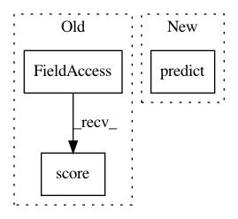

5bf139b5a4312e6bfbe6a196e68fb261ef674368,src/skmultiflow/bayes/naive_bayes.py,NaiveBayes,score,#NaiveBayes#Any#Any#,118
Before Change
The classifier"s score.
return self.classifier.score(X, y)
def reset(self):
self.__init__()
After Change
def score(self, X, y):
from sklearn.metrics import accuracy_score
return accuracy_score(y_true=y, y_pred=self.predict(X))
def reset(self):
self.__init__(self._nominal_attributes)
In pattern: SUPERPATTERN
Frequency: 3
Non-data size: 3
Instances
Project Name: scikit-multiflow/scikit-multiflow
Commit Name: 5bf139b5a4312e6bfbe6a196e68fb261ef674368
Time: 2019-02-25
Author: jacob.montiel@gmail.com
File Name: src/skmultiflow/bayes/naive_bayes.py
Class Name: NaiveBayes
Method Name: score
Project Name: scikit-multiflow/scikit-multiflow
Commit Name: 6496c605ad12f3eaac3939804ee8bef0b82a2692
Time: 2019-02-27
Author: aquancva@gmail.com
File Name: src/skmultiflow/bayes/naive_bayes.py
Class Name: NaiveBayes
Method Name: score
Project Name: scikit-optimize/scikit-optimize
Commit Name: 9cdd21160f4b4352b05f7b7ce9f0f63506c585c9
Time: 2017-04-17
Author: iaroslav-ai@users.noreply.github.com
File Name: benchmarks/bench_ml.py
Class Name: MLBench
Method Name: evaluate